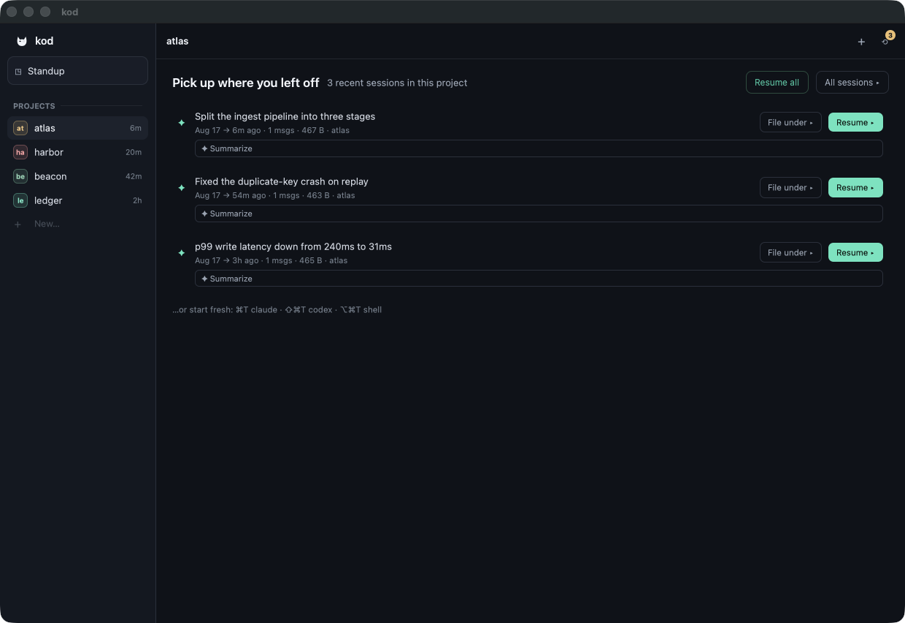
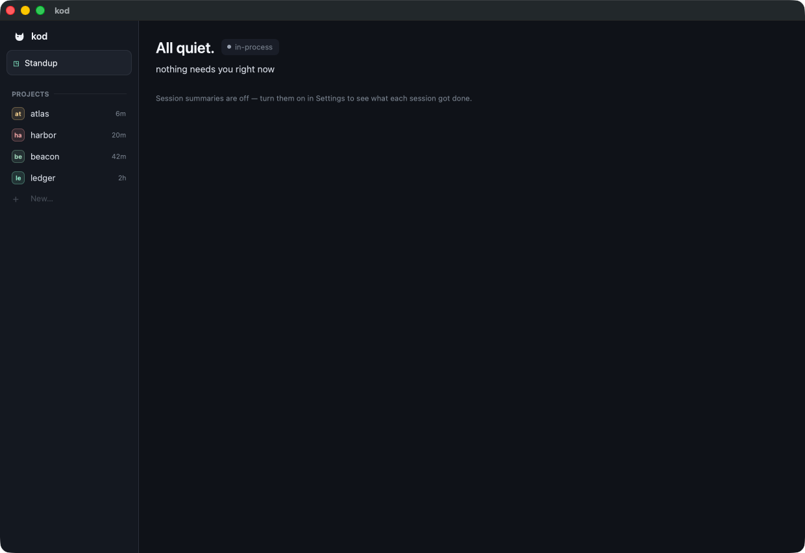

Ten claude and codex sessions across your projects, and you're
tab-hopping just to find which one finished and which one is
waiting on you. Kod watches all of them and tells you.
macOS 13+ · Apple silicon & Intel · signed and notarized · Apache-2.0
Every session you've started, across every project, with the one that's blocked pinned to the top. A desktop notification fires the moment an agent needs a decision — so you can look away and trust Kod to pull you back.

Who's live, who's idle, who needs you, and who hit a usage limit — plus idle-time summaries of what each session actually got done.
Named per-CLI accounts, isolated by CLAUDE_CONFIG_DIR and
CODEX_HOME. Run two claude accounts and pick one per session.
Find and resume sessions that crashed or that you started in a terminal somewhere and lost track of.
A background daemon owns your sessions, so quitting the window doesn't kill the work. Kod hosts real terminals — your agents run exactly as they would in a terminal, because they are in one.

Signed with a Developer ID and notarized by Apple, so it opens without a warning.
# download Kod.dmg from Releases, then drag Kod.app to Applications
Or build it yourself:
git clone https://github.com/FelisAI/kod.git cd kod/app cargo run -p orchestrator-gui
Requires macOS 13 or newer, a Rust toolchain via
rustup (the pinned version installs itself), and the
Xcode Command Line Tools. You'll also want
claude and/or codex on your
PATH — Kod orchestrates them, so without at least one it has little to do.
The first build takes a few minutes; later ones are incremental.